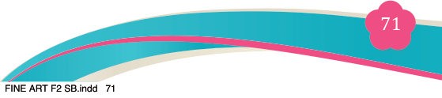
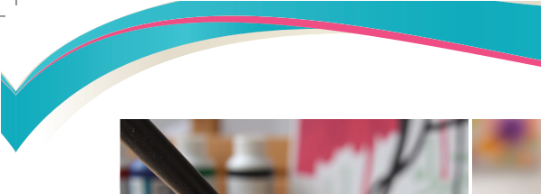
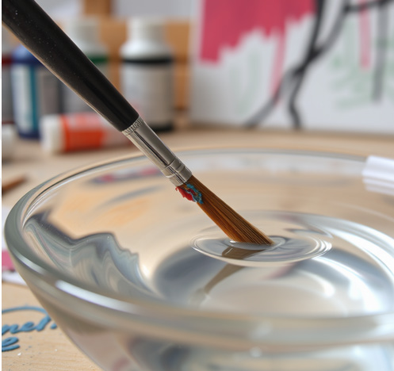
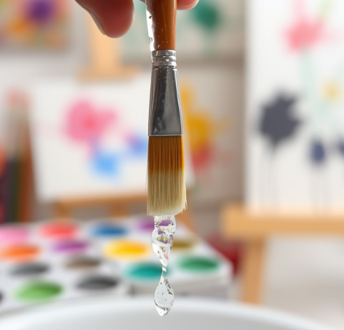

Figure 4.8 (a): Proper way of washing acrylic painting brush by water
Figure 4.8 (b): Proper way of washing acrylic painting brush by liquid solvent
(iii) Removing acrylic paint from clothing
Clean acrylic paint with water while the paint is still wet.
(iv) Cleaning acrylic paint from a painting surface
Wipe it with damp cloth and clean it with fresh water when it is still wet.
When the paint is dry, just paint over the surface with new colour to achieve the intended effect.
Procedures for creating simple functional painting
Painting from memory involves sketching and painting by imagination. The
following are steps involved:
Step 1: Selecting simple subjects
Before undertaking simple functional painting compositions, start by imagining
simple subjects, such as a teacup.
To compose your subject, remember to use the following instructions to get started:
(i) Rule of thirds. Divide your medium, both horizontally and vertically, into three equal rows. Then position the important elements of the picture near those lines:
(ii) Choosing the format: Landscape (horizontal rectangle) creates the impression of space; Portrait” (vertical rectangle) gives the impression
of intimacy; panorama (very wide rectangle) produces a panoramic view.
Square format draws the eye to the centre of the picture.